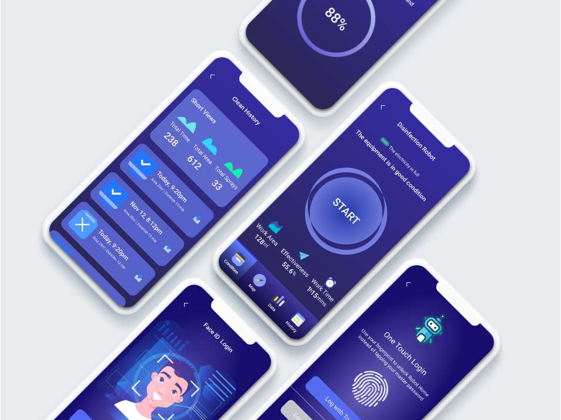
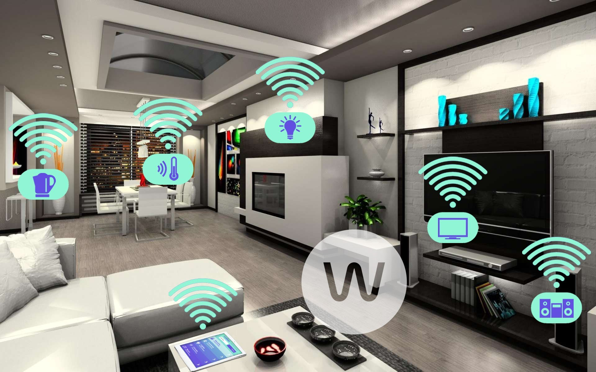
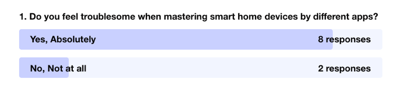
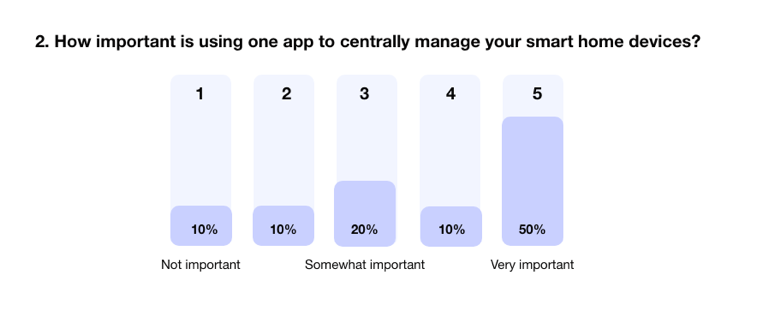
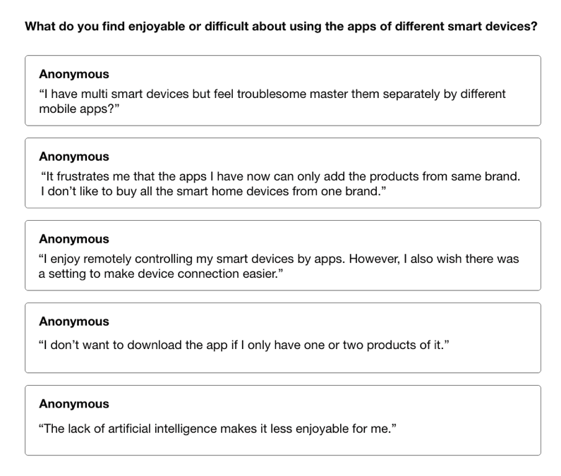
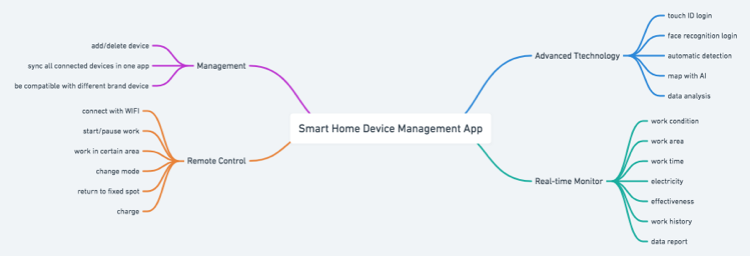
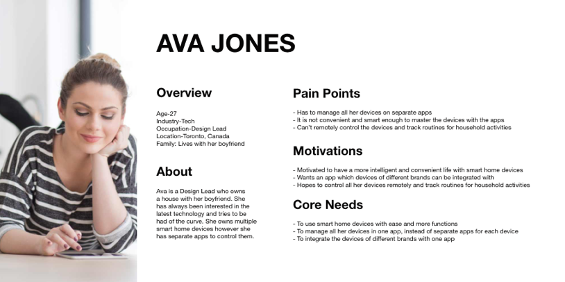
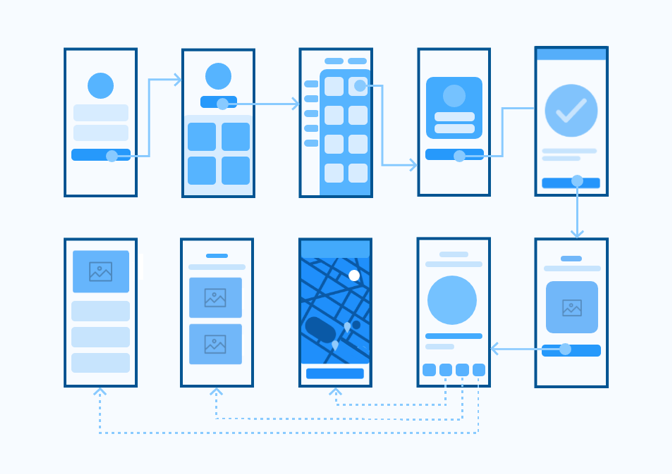
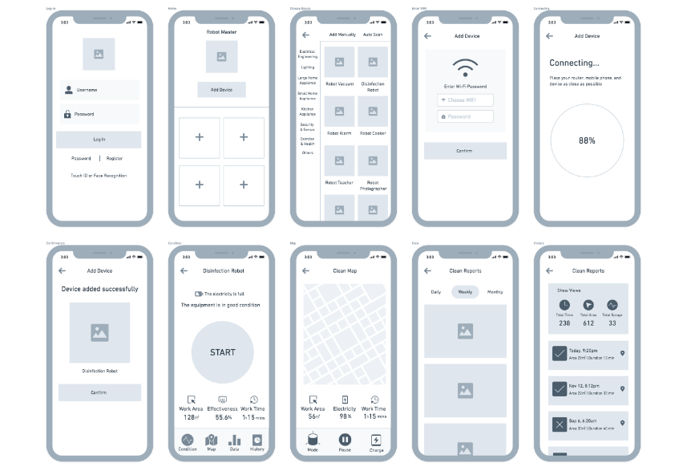
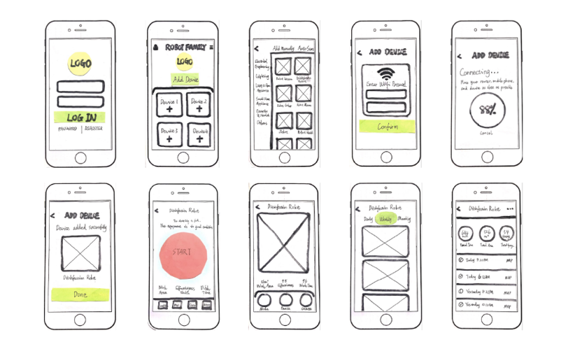

Robot Master
An app designed for helping user control and manage smart home robots systematically and efficiently.
Team
Solo Designer
Tools
Figma, Sketch, Whimsical
Tags
Product Design, Smart Product, UI/UX
Timeline
School Project (one month)
INTRODUCTION
Project Overview
Robot Master is a smart products management app which helps user control and manage the smart home robots systematically, efficiently and intelligently.
The idea comes from the popular trend of robots in recent years. With the advancement of science and technology, the use of robots in various fields of social production and life has become more extensive. Among them, smart home robots are a highlight. More variety of smart home robots are constantly being created and they gradually enter people's lives. People are often afraid of being replaced by robots in the future. In my opinion, through technological innovation, it is inevitable that many human jobs will be replaced by robots in the future, but we should focus on how to properly manage robots and make them better service human.
In addition, the idea also inspired by my bad experience that I have multi smart devices, and each of them having its own app. It’s frustrating for me that I need to open different apps to manipulate them separately every time when using and sometimes I even confused them. After conducting user research, I decided to design and create a more user-friendly app which helps users to manipulate the smart products easily. The goal is to create an efficient tool which user can add their smart home robots quickly and master all of them conveniently to improve user’s life experience and quality.
HOW IT BEGINS
Design Challenge
How might we design a product that can help the owners of smart home robots better manage and control their devices?
Solution
My solution is a smart products management mobile application. The application provides users with ability to manage all smart home robots by a single app systematically, integrate different brand products with one app, and master the devices conveniently with more functions like real-time monitor. With the application, user will have a more relaxing and intelligent life due to higher efficiency with smart home devices. What’s more, more people will buy smart products because it is more convenient to master them.
USER RESEARCH
User Interview & Survey
In order to validate the quality of the idea, I conducted some quick user surveys with the primary user base that I was targeting.
I learned that 8/10 respondents have the problem that they have multi smart devices but feel very troublesome to master them separately by different apps. More than 90% of respondents thought it’s “very important” or “somewhat important” to have an app to centrally manage all of their smart home devices from different brands.
 As an additional measure to the previous surveys, I also conducted a small interview with 5 people asking them what they find enjoyable and/or difficult about the using smart products with mobile apps.
The responses helped me gauge what the immediate thoughts of some users were and their pain points. Although these aren’t quantifiable, it gave me valuable insight into what is currently working and what is not.
IDEATION THE APP
Determining the features
By taking a look at our user pain points, motivations, and core needs, I was able to come up with a list of features. The list included:
- Simplicity & Efficiency
- QR/Barcode Scanner Integration
- Task Management
- Map
- Remote Control
- Real-time Monitor
- 3D magic
- On-demand data collection, aggregation and analysis
- Advanced Analytics
- Artificial Intelligence
Given my short time frame, I wasn’t able to work on all of the features that I had thought about. However, I distilled it down to 4 core features that I thought would serve as an MVP.
- Simplicity & Efficiency
- Remote Control
- Real-time Monitor
- On-demand data collection, aggregation and analysis
Mind Mapping
FINDING THE FOCUS
Persona
After summarizing my research and identifying the pain points / opportunities, I created a persona that would exemplify the user type that I was targeting.
The persona helps give direction to what the intention and core needs of the design solution should be.
User Flows
In order to visualize the journey that my target user would take, I created a user flow within the app’s core features.
The user flow lays out the user's movement through the mobile app, mapping out each and every step the user takes—from entry point right through to the final interaction.
Wireframe
PROTOTYPING
Sketching the Interface
As the streamlined and integrated flow became more and more clear, I began sketching wireframes of the new solution. The purpose of the low fidelity sketches was mainly to ensure hierarchy, design goals, and make sure that I was using the proper components for each function.
Final Output
The final product allows users to centrally manage and control all their smart devices conveniently and efficiently. First, users can quickly log in to the app through three different methods: username login, fingerprint login and face recognition. Then, they can choose to add the smart device they want to use with one click. After the device connected successfully, they can enter the dashboard for remote control, real-time monitor, data tracking and other functions.
Our team decided that it would be useful for all of us to get in a room and jam on the problem. I spent a few days planning the workshop and gathering feedback from key stakeholders and other designers.
Reflection
The idea of smart home robot management tool has been in my mind for a long time, and I am so delightful to have the opportunity to make it real in school project this time. Through this project experience, I first learned that triangulating Data is very helpful, which can figure out what user really wants. Because I’m designing a new tool that is nothing like it, it is hard for people to imagine they are using it until you present the prototype. I need to carefully evaluate the data collected from the user interview to see if they truly mean it. E.g. when people say they feel troublesome when mastering smart home devices by different apps, they actually need an app to centrally manage their smart home devices of different brands.
Secondly, keeping balance between time, scope and resource is very important. Given that I only had 4 weeks to complete the whole project, I have made a lot of assumptions and made decisions based on casual interviews and secondary research. Also, for the high-fidelity prototype, I didn't do usability testing. Instead, I used heuristic evaluation by my designer friends and received a lot of helpful suggestions.
Future Development ⚡
There are many more ways to refine and expand the scope of Robot Master down the road. One next step I would like to pursue is to seek the experts on the creation of content for the "challenge". If time permits, I would like to define tasks, establish objectives and evaluate the app.
Thanks for Reading ❤️
If you’d like to hear more about my experience, feel free to send me an email–I’d love to chat ☕.
My Other Projects
If you'd like to see more, check out my other projects below!